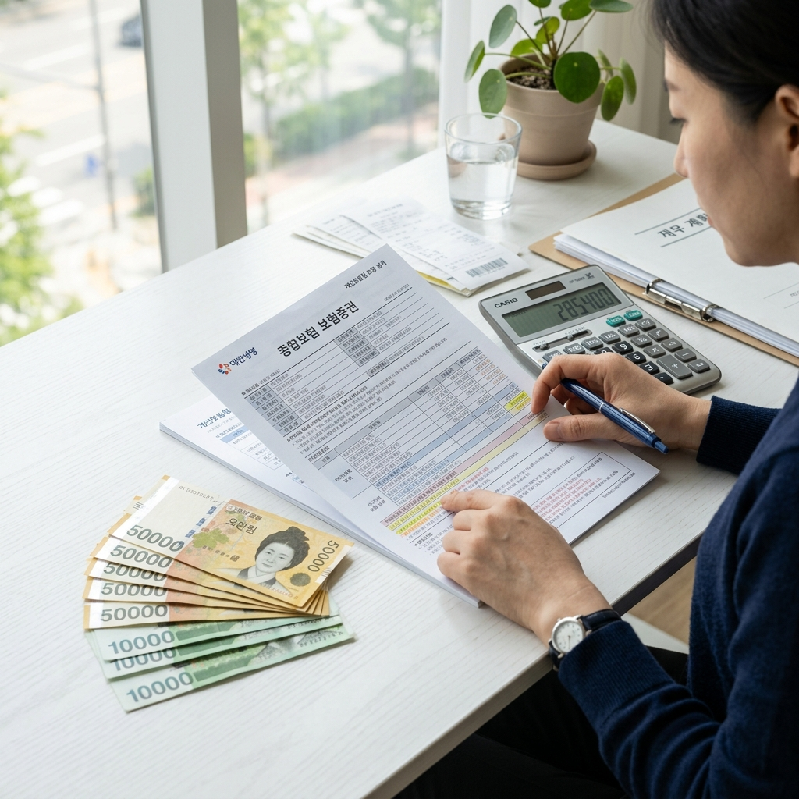
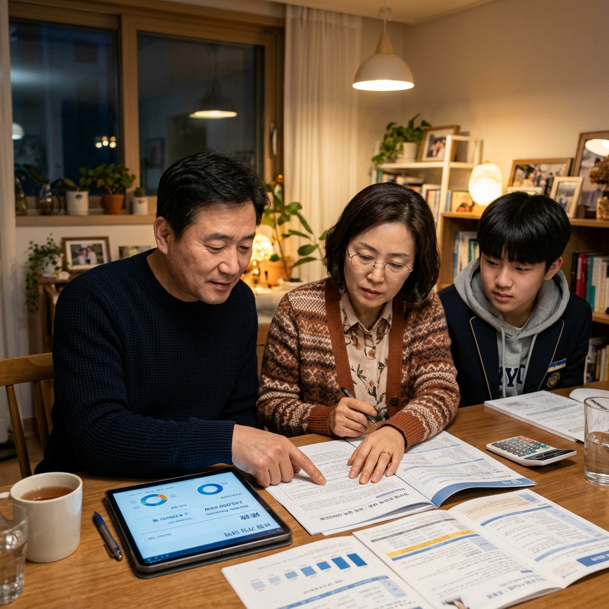

오래전 가입했다가 잊어버린 보험, 부모님이나 조부모님 명의로 든 보험에서 나도 모르게 발생한 보험금이 청구되지 않은 채 남아 있을 수 있습니다.
금융감독원과 생명보험협회·손해보험협회가 운영하는 내보험찾아줌(cont.insure.or.kr)을 이용하면, 본인 또는 가족 명의의 잠자는 보험금을 무료로 조회하고 직접 청구할 수 있습니다.
이 글에서는 서비스 이용 방법, 청구 절차, 입금까지 걸리는 시간을 단계별로 정리했습니다.
출처: 생명보험협회 공식 안내, 금융감독원 미수령 보험금 캠페인.
보험 계약이 살아있고 보험 사고가 발생했음에도 가입자(또는 수익자)가 청구하지 않아 지급되지 않은 돈을 '미수령 보험금' 혹은 속칭 '잠자는 보험금'이라고 합니다.
왜 청구를 못 하는 걸까요? 가입 사실 자체를 잊어버린 경우, 보험사가 통보했지만 연락처 변경으로 전달이 안 된 경우, 고령자나 사망자 명의의 보험에서 유가족이 존재를 몰랐던 경우 등이 많습니다.
금융감독원에 따르면 매년 수천억 원 규모의 미수령 보험금이 쌓이고 있습니다.
내보험찾아줌 서비스가 생긴 이유입니다.
내보험찾아줌은 생명보험협회와 손해보험협회가 공동으로 운영하는 공식 조회 창구입니다.
사이트 주소는 cont.insure.or.kr이며, PC와 모바일 모두에서 이용할 수 있습니다.
서비스 이용은 완전 무료입니다.
본인 인증을 거치면 생명보험·손해보험 가릴 것 없이 자신의 미수령 보험금 현황을 한 화면에서 확인할 수 있습니다.
조회 결과가 있으면 각 보험사에 직접 청구 신청을 연결해 주는 기능도 제공합니다.
별도로 보험사별 창구를 방문하거나 전화를 돌릴 필요 없이 한 곳에서 처리할 수 있다는 것이 가장 큰 장점입니다.
cont.insure.or.kr에 접속하면 '미수령 보험금 조회' 메뉴를 선택합니다.
공동 인증서(구 공인인증서), 금융인증서, 카카오페이 인증, 네이버 인증 등 여러 가지 본인 인증 수단 중 하나를 선택해 로그인합니다.
인증이 완료되면 본인 명의의 생명보험·손해보험 계약 중 미수령 보험금이 있는 건들을 자동으로 보여줍니다.
가족(부모님, 배우자 등)의 미수령 보험금을 대신 확인하려면 '가족 조회' 기능을 이용해야 하며, 위임 절차가 필요합니다.
사망자 명의 보험금은 유가족이 보험사에 직접 연락해야 청구할 수 있습니다.
조회 결과 목록에서 청구하고 싶은 건을 선택하면 해당 보험사의 청구 화면으로 바로 연결됩니다.
추가로 요구되는 서류가 있다면 화면에 안내됩니다.
서류가 필요 없는 단순 지급 건은 대부분 온라인에서 즉시 청구가 완료됩니다.
청구 후 통장 입금까지는 1~5 영업일이 소요됩니다.
처리 상황은 해당 보험사 홈페이지나 고객센터를 통해 확인할 수 있습니다.

자주 혼동되는 두 용어를 구분해 드립니다.
미수령 보험금은 보험 사고가 발생해 보험금을 받을 권리가 생겼지만, 가입자가 청구하지 않은 상태의 돈입니다.
내보험찾아줌에서 조회하는 것이 주로 이 유형입니다.
휴면 보험금은 만기 환급금이나 해지 환급금처럼 지급 사유가 확정됐는데도 일정 기간(보통 3년~5년) 동안 찾아가지 않은 돈으로, 금융감독원의 '금융소비자정보포털 파인(fine.fss.or.kr)'에서 조회할 수 있습니다.
두 서비스를 함께 이용하면 잊혀진 금융 자산을 더 폭넓게 파악할 수 있습니다.
고령의 부모님이나 기억력이 약하신 어르신들은 본인이 어떤 보험에 가입해 있는지조차 모르는 경우가 많습니다.
내보험찾아줌에서는 가족 동의를 받아 대리 조회를 신청할 수 있습니다.
부모님과 함께 가족관계증명서를 준비하거나, 모바일 인증 방식으로 동의를 처리하면 됩니다.
명절이나 가족이 모이는 자리에 잠깐 앉아 함께 확인해 보는 것을 권장합니다.
의외로 수십만 원에서 수백만 원의 보험금이 잠들어 있는 경우가 실제로 발생합니다.
내보험찾아줌은 공식 기관 서비스이지만, 이를 사칭한 문자나 전화 사기도 존재합니다.
'미수령 보험금이 있다'는 불특정 문자나 카카오톡 링크를 통해 개인정보나 금융정보를 요구하는 경우는 의심하세요.
항상 본인이 직접 cont.insure.or.kr에 접속해 조회하는 방식이 안전합니다.
또한 보험금 청구 권리는 3년의 소멸시효가 있습니다.
사고 발생 또는 지급 사유 확정 후 3년 이내에 청구하지 않으면 권리가 소멸될 수 있으니, 알았다면 빠르게 행동하는 것이 좋습니다.

| 항목 | 내용 |
|---|---|
| 서비스 주소 | cont.insure.or.kr |
| 운영 기관 | 생명보험협회 + 손해보험협회 (금융감독원 협업) |
| 이용 비용 | 무료 |
| 인증 수단 | 공동인증서, 금융인증서, 카카오페이, 네이버 등 |
| 입금 소요 기간 | 청구 후 1~5 영업일 |
| 주의사항 | 청구권 소멸시효 3년, 사칭 문자 주의 |
내보험찾아줌(cont.insure.or.kr)에서 본인 조회 후 결과가 없어도 실망할 필요 없습니다.
이번에 없다고 해도, 앞으로 보험금이 발생할 때 빠르게 청구할 수 있는 루틴을 만들어 두는 것이 중요합니다.
금융감독원 파인(fine.fss.or.kr)의 '내 계좌 한눈에', '숨은 금융자산 찾기'도 함께 이용하면 잊혀진 예금·보험·카드 포인트 등을 통합적으로 파악할 수 있습니다.
가족들에게 이 서비스를 알려주고 같이 점검해 보시기 바랍니다.